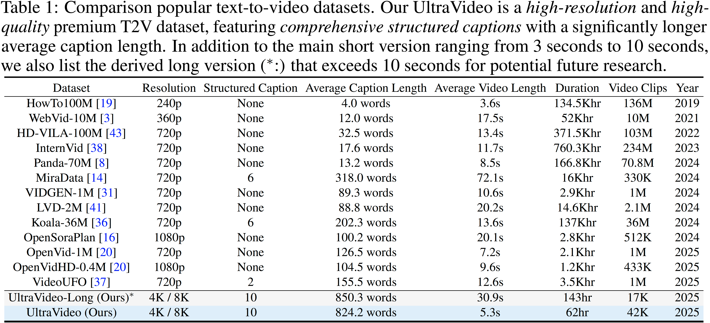

High-lights
1) First open-sourced UHD-4K/8K video datasets with comprehensive structured (10 types) captions.
2) Native 1K/4K videos generation by UltraWAN.



Multimodal Large Language Models (MLLMs) have demonstrated excellent performance in video understanding but suffer from degraded effectiveness when processing long videos due to fixed-length contexts and weaknesses in modeling long-term dependencies. Retrieval-Augmented Generation (RAG) technology can mitigate these limitations through dynamic knowledge expansion, but existing RAG schemes for video understanding employ fixed retrieval paradigms that use uniform structures regardless of input query difficulty. This introduces redundant computational overhead and latency (e.g., complex graph traversal operations) for simple queries (e.g., frame-level object recognition) while potentially causing critical information loss due to insufficient retrieval granularity for multi-hop reasoning. Such single-step retrieval mechanisms severely constrain the model’s balance between resource efficiency and cognitive depth. To address this, we first propose a novel AdaVideoRAG framework for long-video understanding, which uses a lightweight intent classifier to dynamically and adaptively allocate appropriate retrieval schemes—ranging from the simplest to the most sophisticated — for different video understanding tasks based on query complexity. We introduce an Omni-Knowledge Indexing module to extract valuable information from multi-modal signals for context modeling and build corresponding databases, i.e., a text base from clip captions, ASR, and OCR; a visual base; and a graph for deep semantic understanding. This enables hierarchical knowledge access, integration, and generation from naive retrieval to graph retrieval, achieving an optimal balance between resource consumption and video understanding capabilities. Finally, we construct the HiVU benchmark for deep understanding evaluation. Extensive experiments show that our framework enhances the overall efficiency and accuracy of Video-QA for long videos and can be seamlessly integrated with existing MLLMs via lightweight API calls, establishing a new paradigm for adaptive retrieval augmentation in video analysis.
1) First open-sourced UHD-4K/8K video datasets with comprehensive structured (10 types) captions.
2) Native 1K/4K videos generation by UltraWAN.